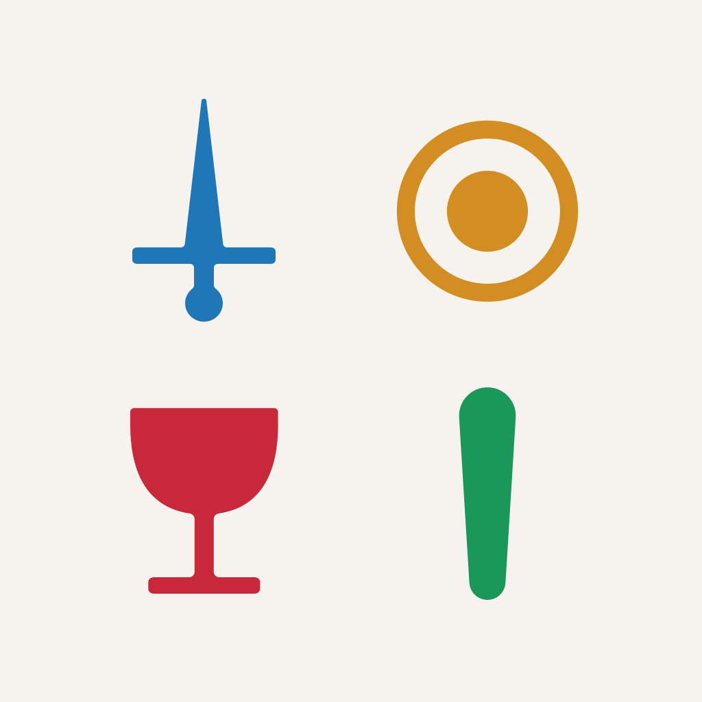

light — picked when iOS is in light mode at install
256×256 light
Three new assets: animated favicon, light home-screen icon, dark home-screen icon. All three use the exact Figma path data (espada/oro/copa/basto, 2×2 grid with verticals on the descending diagonal). Toggle your OS theme — bg + suit tints should swap. The favicon in the browser tab should cycle espada → oro → copa → basto, 1 second each.
Same order as the static grid reads (top-left, top-right, bottom-left, bottom-right). 1 second per suit, 4 second loop.
The squircle below approximates iOS's mask. iOS applies its own mask in production, so the source PNG is a flat square.

light — picked when iOS is in light mode at install
Figma's #F92E49 copa and #1990D4 espada were too
saturated/bright next to oro and basto. The set below sits in a unified
S 67–71% / L 35–48% band, with perceptually equal lightness so no
single suit dominates. These values are also written into src/index.css
(--accent, --suit-red, --suit-blue,
--suit-green), so the on-screen suit row on Home, palitos, and
PulseGlow inherit them automatically.
Sticking with the existing dark-theme tokens. They already harmonize on felt.